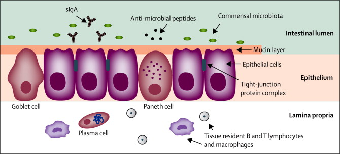
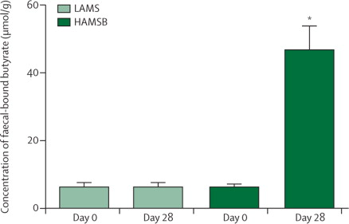
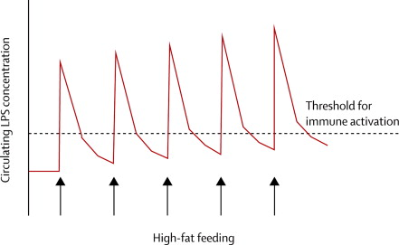
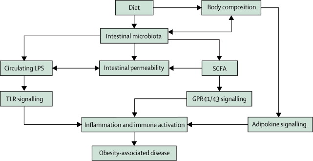

As the prevalence of obesity and associated disease continues to rise and concerns for the spiralling economic and social costs also escalate, innovative management strategies beyond primary prevention and traditional lifestyle interventions are urgently needed. The biological basis of disease is one avenue for further exploration in this context. Several key inflammatory markers have been consistently associated with both obesity and risk of adverse outcomes in obesity-associated diseases, which suggests that a persistent, low-grade, inflammatory response is a potentially modifiable risk factor. In this Review, we provide evidence supporting perturbation of the intestinal microbiota and changes in intestinal permeability as potential triggers of inflammation in obesity. Further characterisation of the mechanisms underpinning the triggers of such inflammatory responses in overweight and obese individuals could offer unique opportunities for intervention strategies to help ameliorate the risk of obesity-associated disease.
Obesity is now a global health issue, with overnutrition and excess bodyweight having a similar prevalence to undernutrition.1 Present WHO statistics report that up to 35% of adults aged more than 20 years are currently considered overweight (BMI >25 kg/m2), and 11% are obese (BMI >30 kg/m2), meaning that almost 2·5 billion people are affected. Excess bodyweight has been identified as the fifth leading risk factor for death globally.2 However, of the top four leading risk factors for death, high blood pressure, high blood glucose, and physical inactivity could contribute to, or result from, excess bodyweight, which emphasises the immense problem of obesity in relation to morbidity and mortality.
The aetiology of obesity is complex and includes both biological and environmental factors, which contribute to consumption of a high-calorie diet and reduced physical activity. Indeed, in many high-income countries where sedentary lifestyles are becoming predominant, more than 60% of adults are regarded as overweight or obese.3, 4, 5 The increasing prevalence of obesity-associated diseases, including metabolic syndrome (encompassing hypertension, dyslipidaemia, and insulin resistance), type 2 diabetes, cardiovascular disease, end-stage renal disease, and non-alcoholic fatty liver disease, is therefore not surprising.
The social and economic implications of this global obesity epidemic are extensive. At an individual level, health-care expenditure for obese individuals is 1·5—1·8 times greater than that for non-obese individuals.6 In addition to direct economic costs, indirect costs related to absenteeism, lost productivity, and premature mortality further reinforce the potentially catastrophic economic consequences of the burgeoning obesity issue.
Inflammation has been implicated in efforts to better understand the biological underpinnings of risk of obesity and associated disease. Indeed, many key inflammatory markers have been consistently associated with both obesity and risk of adverse outcomes in obesity-associated disease. A meta-analysis of 51 independent cross-sectional studies provides evidence supporting a positive association between body composition and C-reactive protein—a marker of systemic inflammation.7 Similar associations have also been reported for erythrocyte sedimentation rate,8 plasminogen-activator inhibitor 1,9 and key inflammatory cytokines,10, 11 which further support the likely interplay between obesity and inflammation. Increases in a range of inflammatory markers have also been reproducibly associated with an increased risk of a range of obesity-associated diseases including cardiovascular disease12, 13 and type 2 diabetes.14, 15
Despite these associations, the causal pathways underpinning the relations between obesity, inflammation, and risk of disease have not yet been fully identified. Further characterisation of the triggers of a persistent, low-grade, inflammatory response in overweight and obese individuals might offer unique opportunities for novel intervention strategies to help to ameliorate the risk of obesity-associated disease. In this Review we consider the interaction between the intestinal microbiota, mucosa, and associated lymphoid tissue as a biological network of interest in the context of obesity-associated disease.
The term intestinal microbiota describes the various commensal microbial species (thought to be >500) in the gastrointestinal tract.16 The dominant bacterial phyla in the human intestine are Bacteriodetes (eg, Bacteriodes spp), Firmicutes (eg, Clostridium and Bacillus spp), and Actinobacteria (eg, Bifidobacterium spp),17 and the total number of microbes in the intestinal mucosa is estimated to exceed 100 trillion and thought to outnumber human cells by a factor of 10.16 The resident microbiota are increasingly recognised as having crucial roles in host functioning, and subsequently in health and disease. Some of the major functions of the commensal microbiota at the intestinal mucosa include: (1) provision of resistance to infection by pathogenic microorganisms through direct competition for nutrients and attachment sites, and production of antimicrobial substances; (2) promotion of epithelial cell proliferation and differentiation to maintain an intact mucosal surface; (3) promotion of the development of the gut-associated lymphoid tissue via initiation of dendritic cell maturation and differentiation of B and T lymphocytes; and (4) energy harvest from non-digestible dietary starches.16, 18 The potential for the intestinal microbiota to contribute to energy harvest is of particular interest in the context of obesity.
Initial evidence from animals supports the contribution of the intestinal microbiota to energy harvest and associations with body composition. Lower body mass and body fat has been reported in germ-free mice than in their wild-type counterparts,19 even after their exposure to a high-fat and sugar-rich model of a diet typically noted in high-income countries.20 These results suggest that in the absence of a colonised gastrointestinal tract, the capability for energy harvest is diminished. Transplantation of wild-type microbiota to germ-free mice normalises bodyweight between the groups of animals.19 Conversely, transplantation of microbiota from obese mice results in increased fat mass in germ-free animals,21 which suggests a unique microbial composition in obese animals that favours accumulation of excess bodyweight. Changes in the abundance of different microbial phyla have been reported in mouse models in response to the introduction of high-fat diets,22, 23 suggesting that not only does the intestinal microbiota have the potential to affect body composition, but that dietary patterns can also change the microbial composition, further augmenting a propensity towards excess bodyweight.
Subsequent human studies have directly compared the composition of the intestinal microbiota between obese and lean individuals. Ley and colleagues24 compared the composition of the faecal microbiota between 12 obese and two lean individuals and reported a significantly lower relative abundance of Bacteriodetes, but a higher relative abundance of Firmicutes in the obese individuals. Investigators of a subsequent study of 54 adult female monozygotic and dizygotic twin pairs concordant for body composition also reported significantly reduced intestinal bacterial diversity, a lower relative abundance of Bacteriodetes, and higher relative abundance of Actinobacteria in obese compared with lean individuals, but no significant difference in Firmicutes.25 Other studies have produced conflicting results for intestinal microbiota, including a higher relative abundance of Bacteriodetes in a cohort of 68 overweight individuals compared with 30 lean controls;26 no significant difference in the three dominant phyla between nine obese and 12 lean individuals;27 and no difference in the relative abundance of Bacteriodetes between 29 obese and 14 lean participants.28 The small sample sizes and inconsistent findings between these studies suggest a need for further evidence of the association between the intestinal microbiota and body composition through additional clinical studies.
Despite the logistical challenges, both dietary intervention and transplantation studies have also been undertaken in human beings. Increased caloric content (2400 kcal per day vs 3400 kcal per day with similar macronutrient profiles: 24% protein, 16% fat, and 60% carbohydrates) for only 3 days resulted in an increased abundance of Firmicutes and reduced abundance of Bacteriodetes with the higher calorie diet,27 which supports the theory that diet shapes the composition of the intestinal microbiota. An additional feeding study involving ten healthy individuals suggests that changes in the composition of the intestinal microbiota could occur within 24 h of initiation of a high-fat diet.29
Changes in the intestinal microbiota in response to weight-reducing diets have also been documented.28, 30, 31 No changes were noted in the abundance of Bacteriodetes, but some specific Firmicutes species were reduced after a 4 week, low-carbohydrate, weight-reducing diet in 18 obese men.28 In another study, the relative abundance of Bacteriodetes was decreased in 17 obese men after a 4 week, high-protein, low-carbohydrate, diet.30 Lastly, the effect of food on the composition of the microbiota has been shown in a crossover study of 11 individuals consuming either a plant-based or animal-based diet for 5 days, after which the composition of their gut microbiome substantially changed to reflect either carbohydrate or protein.31 Whether the variation in these findings can be accounted for by the different dietary compositions alone is unclear, and whether alterations in the intestinal microbiota that promote energy harvest are a cause or result of diets typical of high-income countries and associated increases in body mass is yet to be established. However, in view of the functions of the intestinal microbiota beyond energy harvest, additional mechanisms involving the microbiota including promotion of mucus and antimicrobial peptide secretion,32 and signalling by metabolic byproducts31, 33 could also contribute to risk of obesity and associated disease.
The permeability of the intestinal mucosa should be finely regulated to facilitate any necessary absorptive functions without compromising barrier exclusion. The interaction between various integral membrane proteins and cytoskeletal components provides the structural framework to maintain integrity of the intestinal mucosa via intercellular tight junctions—an essential regulator of intestinal permeability. Additional factors, including mucus secretions from goblet cells, release of antimicrobial peptides from Paneth cells, and immunoglobulin secretions from resident immune cells, also contribute to effective barrier exclusion34 (figure 1). However, the potential for the intestinal microbiota to contribute to the continued remodelling of the mucosal surface16 raises questions regarding how changes in the intestinal microbiota might also contribute to regulation of intestinal permeability. This possibility is of particular interest in view of the reported associations between intestinal permeability and BMI.35

Figure 1 Key components of the intestinal barrier
Tight-junction proteins, anti-microbial peptide secreting Paneth cells, mucin secreting goblet cells, and secretory immunoglobulin A (sIgA) contribute to effective barrier exclusion.
Animal and in-vitro models have again been useful in gaining preliminary insight into the associations between the intestinal microbiota and intestinal permeability. In-vitro experiments have shown that exposure of cultured intestinal epithelial cells to both commensal and probiotic microbial species results in up-regulation and increased phosphorylation of key tight-junction proteins.36, 37 In animal models, exposure to probiotic microbial species results in better preservation of tight-junction structures (viewed histologically) in response to acute infection.38 Similarly, colonisation experiments in both germ-free mice and animal models of disease result in up-regulation of key tight-junction proteins39 and normalisation of intestinal-barrier function.36, 39 Collectively, this evidence supports the likely contribution of the intestinal microbiota to the regulation of intestinal permeability.
So far, few human studies have directly investigated the associations between the intestinal microbiota and regulation of intestinal permeability. The effects of manipulation of the intestinal microbiota, predominately with probiotic supplements, in both general-population cohorts and in the context of specific disease states, have been the subject of many reviews.40, 41, 42 However, outcome measures are frequently symptom-based and objective assessment of intestinal permeability is often overlooked. A placebo-controlled crossover trial with seven healthy individuals showed increased expression of tight-junction proteins in collected duodenal biopsy samples after 6 h of nasogastric administration of a probiotic-containing solution.43 Our own investigation44 in 22 healthy active adults consuming a symbiotic supplement consisting of a four-strain probiotic, a prebiotic and bovine whey-derived lactoferrin, and immunoglobulins for 21 days showed no change in intestinal permeability assessed with a dual sugar-absorption test. By contrast, a much longer 14 week, double-blind, placebo-controlled study with 23 endurance-trained men taking a supplement consisting of six probiotic strains, showed a significant reduction in faecal excretion of the key tight-junction protein zonulin in response to treatment,45 which suggests preserved integrity of the intestinal mucosa. Similarly, a 9 week intervention with a prebiotic supplement in a Han Chinese cohort reported concomitant changes in the intestinal microbiota and a reduction in intestinal permeability assessed with a dual-sugar-absorption test.46 Although these findings broadly support the potential for targeted modulation of intestinal permeability, further characterisation of the relations between the composition of the intestinal microbiota and measures of intestinal permeability are still needed.
Short-chain fatty acids have been suggested as one mediator via which intestinal microbiota might promote the integrity of the intestinal mucosa, although the mechanisms driving these effects are not yet fully identified. Short-chain fatty acids (mainly acetate, propionate, and butyrate) are the product of bacterial fermentation of non-digestible dietary starch (a recognised prebiotic), predominately in the colon.47 Butyrate particularly is recognised as the main energy source for colonic epithelial cells, and is thought to stimulate blood flow and the secretion of gut hormones, enhance fluid and electrolyte uptake, and increase mucin release,47, 48 all of which contribute to a local tropic effect and maintained integrity of the intestinal mucosa. In vitro, short-chain fatty acid treatment of cultured, intestinal, epithelial-cell monolayers resulted in increased transepithelial electrical resistance.49, 50 Transepithelial electrical resistance is accepted as a surrogate indicator for permeability across tight junctions and, broadly speaking, increased resistance is equivalent to a reduction in permeability. Furthermore, in human colon-cancer cell lines butyrate has been shown to inhibit proliferation,51 and butyrate and propionate insufficiency has been linked to a reduction in apoptosis and tumorigenesis.52 Collectively, this evidence suggests that short-chain fatty acids could contribute to regulation of cell cycles. The regulation of cell proliferation and apoptosis by short-chain fatty acids has implications for growth and shedding of intestinal epithelial cells, because the intestinal epithelium undergoes continuous self-renewal—a crucial process for the regulation of intestinal permeability.
Early insights into the effects of short-chain fatty acids on intestinal permeability have been gained from animals. In a rodent model, perfusion of a closed segment of the caecum with short-chain fatty acids reduced the appearance of a radiolabelled marker in the mesenteric circulation by more than 50%, suggesting a reduction in the permeability of the intestinal mucosa in response to short-chain fatty acids exposure.53 In a mouse model, deficiency in colonic butyrate has been associated with decreased local metabolism and increased autophagy.54 Furthermore, a porcine-feeding study reporting a doubling of butyrate concentration in the proximal colon in response to raw potato starch also showed reduced cell proliferation and apoptosis, and increased mucin sulfuration,55 which lends support to short-chain fatty acid involvement in the maintenance of both the structure and function of the intestinal mucosa.
Translation to human clinical studies has been limited by various ethical and logistical challenges, and results are difficult to replicate; differences in disease duration and severity, existing treatment regimens, and the composition of the short-chain fatty acid mixtures are all potential confounding factors. However, in ulcerative colitis, a disease characterised by altered intestinal permeability, decreased symptom scores and improved histological assessment of the intestinal mucosa have been reported after short-chain fatty acid administration to the colorectal tissues via enema or colonic irrigation.56 Increased concentrations of faecal short-chain fatty acids have also been reported after prebiotic supplementation in healthy adults57 and our own study58 of healthy active adults (figure 2). However, markers of intestinal permeability were not measured concurrently, which prevented further analysis of the associations between short-chain fatty acids and intestinal permeability in otherwise healthy groups.

Figure 2 Dietary supplementation with butyrylated high-amylose versus low-amylose maize starch
An intervention in 41 healthy, physically active adults showed a significant increase in faecal butyrate (a short-chain fatty acid) concentrations (μmol/g) after 28 days of supplementation with a butyrylated high-amylose maize starch (HAMSB), a resistant starch, compared with supplementation with a low-amylose maize starch (LAMS). Simultaneous changes in the composition of the intestinal mucosa were also noted (error bars represent SE). *p<0·05. Data from West and colleagues.58
Beyond documenting the associations between short-chain fatty acids and mucosal integrity, some investigations have begun to focus on the signalling pathways through which short-chain fatty acids might exert their positive effects. Short-chain fatty acids have been identified as ligands for a series of G-protein-coupled receptors (GPRs) expressed on the intestinal epithelium and by adipose tissue and immune cells.59 Short-chain fatty acids differentially activate various GPRs; propionate shows the highest affinity for GPR41 and GRP43, acetate for GPR43, and butyrate for GPR41 and GPR109A.60 Signalling pathways activated downstream include those implicated in the regulation of immunity and inflammation.61 For example, cultured, intestinal, epithelial cells from GRP41 and GPR43 knockout mice show attenuated production of inflammatory cytokine and chemokine production in response to acetate and propionate,62 and GPR43 knockout mice have reduced histological evidence of inflammation in the intestinal mucosa, reduced neutrophil infiltration, and attenuated symptom presentation in a model of induced colitis compared with wild-type animals,63 suggesting that short-chain fatty acids might exert pro-inflammatory effects. By contrast, acetate supplementation in germ-free mice unable to produce endogenous short-chain fatty acids improved indices of disease and reduced concentrations of inflammatory mediators in induced colitis; this effect was not reported in GPR43 knockout animals,64 suggesting that short-chain fatty acids could mediate anti-inflammatory actions via GPRs.
Despite these contradictory findings, additional evidence supports an anti-inflammatory role of short-chain fatty acids in the regulation of homoeostasis at the intestinal mucosa. Animal experiments suggest that short-chain fatty acids promote differentiation and expansion of the local colonic pool of Foxp3 expressing regulatory T cells.65, 66 These cells have a central role in limiting inflammation and promoting tolerance67 that might otherwise contribute to disruption of the integrity of the intestinal mucosa. Additionally, Konieczna and colleagues68 have reported increased frequency of peripheral blood mononuclear cells with a regulatory T cell phenotype in response to 8 weeks of probiotic supplementation in healthy adults, which further implicates the intestinal microbiota as a potential regulator of immune and inflammatory homoeostasis beyond the gastrointestinal tract.
Irrespective of the underlying mechanisms, changes in intestinal permeability have the potential to trigger metabolic endotoxaemia, which might have implications in the context of risk of obesity-associated disease. Metabolic endotoxaemia describes modest concentrations of circulating bacterial lipopolysaccharides in response to non-infectious stimuli.23 Lipopolysaccharide is a cell-wall component of Gram-negative bacterial species and in this way the intestinal microbiota represents a substantial reservoir for entry into the circulation. The presence of lipopolysaccharide in the circulation has been proposed to result from its passive diffusion across an intestinal mucosa where tight junction integrity has been compromised and intestinal permeability increased.69 Active transport pathways have also been implicated in metabolic endotoxaemia. Lipopolysaccharides are incorporated in chylomicron fractions,70, 71 suggesting that active absorption across the intestinal mucosa as part of normal digestion and absorption could also account for the presence of lipopolysaccharide in the circulation. Despite the associations between obesity and metabolic endotoxaemia, the direction of causality has yet to be established.
In view of the potential for active transport of lipopolysaccharide into the circulation it should not be surprising that diet might be one factor affecting its translocation across the intestinal mucosa. Consistent with several studies of dietary manipulation in animal models,22, 23, 72, 73 the association between dietary composition and metabolic endotoxaemia is also evident in human studies. A significant positive correlation has been reported between dietary fat content and plasma concentrations of lipopolysaccharide in a study of 201 healthy, middle-aged men aged 45—64 years72 and a small feeding study (n=8) showed increased plasma lipopolysaccharide (about 70%) after a month-long diet typical of high-income countries (40% fat).74 Data also suggest that metabolic endotoxaemia could be both an acute and a chronic occurrence. Comparison of two groups of ten healthy, lean, individuals consuming a high-fat (about 42% fat) or an isocaloric, low-fat, high-fibre meal (about 27% fat) showed a significant increase in plasma lipopolysaccharide (about 50%) 3 h after the high-fat meal only,75 and, in a follow-up study, increased circulating lipopolysaccharide concentrations persisted up to 5 hours postprandially.76 Additional studies including a randomised crossover trial with 20 healthy men77 and another study with 12 healthy men70 both reported significant increases in plasma lipopolysaccharide concentrations within 1 h after a high-fat meal. These data support the potential for transient fluctuations in plasma lipopolysaccharide in response to high-fat feeding; however, the small sample sizes and inconsistencies in the time-course of lipopolysaccharide kinetics suggest that further characterisation of these responses is still needed, especially responses to the macronutrient composition of a diet typically noted in high-income countries.
The potential implications of metabolic endotoxaemia in the context of risk of obesity-associated disease are implied in many review articles;69, 78, 79 however, epidemiological studies with clear data supporting these associations are scarce. Weidermann and colleagues80 first suggested that circulating lipopolysaccharide was a risk factor for cardiovascular disease on the basis of an analysis of chronic infection rates in the Bruneck Study cohort of middle-aged older adults (approximately 450 participants aged 50—79 years) over the 5 years of follow-up; lipopolysaccharide concentrations were significantly higher in individuals who developed carotid atherosclerosis than in those who did not. A subsequent analysis in the FINRISK study81 examining risk factors of chronic diseases extended these findings; in a subset of approximately 480 adults from the FINRISK92 cohort followed up over a 10-year period, there was a 1·8 times increased risk of cardiovascular disease events (fatal and non-fatal) for individuals with endotoxin concentrations in the upper quartile. Collectively, these data support an association between circulating endotoxin and risk of cardiovascular disease, but do not provide evidence for a causal association or insights into a possible underlying mechanism.
Data also implicate circulating endotoxin in the risk of type 2 diabetes. Higher plasma endotoxin concentrations have been reported in a sample of 25 middle-aged individuals with type 2 diabetes, compared with a matched-control group.82 Higher circulating endotoxin concentrations have also been reported in a cohort of 346 individuals with type 2 diabetes receiving treatment across several modalities, which suggests that glycaemic control itself is not associated with the regulation of metabolic endotoxaemia.83 A larger analysis of the FINRISK97 cohort84 (approximately 6600 participants) showed that circulating endotoxin concentrations at baseline were substantially higher in the participants with type 2 diabetes than in healthy individuals, and predicted development of type 2 diabetes during the 10-year follow-up; for individuals with endotoxin concentrations in the upper quartile, the risk of type 2 diabetes during follow-up increased by 1·5 times. In view of these associations, understanding the physiological responses to circulating endotoxin could provide further insight into the pathogenesis of obesity-associated disease.
In addition to originating from the commensal intestinal microbiota, lipopolysaccharides represent key components of Gram-negative pathogenic strains and are recognised by pattern-recognition receptors that play a crucial part in the activation of immune and inflammatory pathways. Responses to circulating lipopolysaccharides are well characterised in models of infection and sepsis, but activation of similar signalling pathways would also be expected in metabolic endotoxaemia and could provide insight into how the interplay between the commensal microbiota and the immune system might contribute to risk of obesity-related disease.
Briefly, once in the circulation lipopolysaccharides bind to lipopolysaccharide-binding protein (LBP), a constitutively expressed plasma protein that facilitates the interaction between lipopolysaccharides and various receptors and binding sites.85 LBP can also facilitate the transfer of lipopolysaccharide to lipoproteins—HDL has the greatest capacity for binding lipopolysaccharide.86 Tethering of lipopolysaccharide to lipoproteins can reduce the biological activity of lipopolysaccharide and allows for hepatic clearance.85 In fact, increased circulating concentrations of LBP have been reported to parallel increases in lipopolysaccharide in acute infection or sepsis,87, 88 providing a mechanism for lipopolysaccharide clearance. Increased circulating LBP concentrations have been reported in obese individuals89, 90 and are probable triggers for further downstream signalling from lipopolysacharide, contributing to a persistent low-grade inflammatory response.
Lipopolysaccharide—LBP binding allows for activation of several classic immune pathways, including nuclear factor-κB (NF-κB) activation and subsequent inflammatory responses. The associated widespread signalling networks clearly implicate cluster of differentiation 14 (CD14) and toll-like receptor 4 (TLR4) cell-surface molecules.79, 91, 92 Animal models of TLR4 mutants or knock-outs,93, 94 and a clinical trial involving infusion of an anti-CD14 antibody,95, 96 all showed attenuated inflammatory responses to lipopolysaccharide exposure and contribute to the body of evidence supporting the role of CD14 and TLR4 signalling in mediating the inflammatory response to lipopolysaccharide exposure.
TLR4 expression on immune cells, including monocytes, macrophages, and neutrophils, and non-immune cells, including adipocytes and endothelial cells,78, 92 allows for both systemic and local inflammatory responses to lipopolysaccharides, which might be particularly relevant in the context of obesity-associated disease. Indeed, lipopolysaccharide-signalling pathways have been investigated as risk factors for both insulin resistance and cardiovascular disease. Impaired insulin-stimulated glucose uptake in cultured adipocytes after lipopolysaccharide exposure and activation of TLR4-signalling pathways has been reported,97 implicating lipopolysaccharide signalling as a potential contributor to insulin resistance. Subsequently, Cani and colleagues23 showed that chronic experimental endotoxaemia was associated with an increase in bodyweight, adipocyte size, glycaemia, and insulin resistance, but that this series of responses was attenuated in CD14-deficient mice. These findings are consistent with those reported by Tsukumo and colleagues98 in a similar experiment with TLR4-deficient mice, for which it was also concluded that lipopolysaccharide signalling through the TLR4 or CD14 pathways contributes to risk of metabolic dysregulation. Lastly, a study with a TLR4-deficient, atherosclerosis-prone mouse model has reported reduced plaque-lipid content, reduced macrophage infiltration, and reduced total atherosclerotic lesion area in TLR4-deficient animals,99 implicating the TLR4-signalling pathway in contributing to atherogenesis, which is particularly relevant in the context of obesity-associated disease.
Consideration of the various physiological responses to lipopolysaccharide would be incomplete without acknowledging that increased intestinal permeability has been described in sepsis. Results from animals suggest that high plasma lipopolysaccharide concentrations could trigger further disruption of the integrity of the intestinal mucosa,100, 101 and human studies support the potential for changes in intestinal permeability in response to lipopolysaccharide exposure. Jorgensen and colleagues102 reported increased plasma presence of a radiolabelled marker given via colonic enema to a group of nine patients with sepsis compared with healthy controls, suggesting an increase in intestinal permeability in response to lipopolysaccharide. Investigators of a subsequent study of ten healthy young adults reported increased intestinal permeability, assessed by urinary recovery of orally administered polyethylene glycols, in response to lipopolysaccharide infusion.103 Increased plasma concentrations of the tight-junction protein zonulin have been reported in a cohort of 25 patients with sepsis compared with a healthy control group, suggesting the potential for shedding of tight-junction proteins in sepsis, disruption of the structural integrity of the intestinal mucosa, and increased intestinal permeability.104
Whether additional changes in intestinal permeability happen as a result of metabolic endotoxaemia is unclear. Indeed, the threshold for lipopolysaccharide to elicit further disruptions in intestinal permeability might vary between individuals and be affected by rates of lipopolysaccharide clearance, which is itself affected by the ability to upregulate LBP. However, if metabolic endotoxaemia itself is a sufficient trigger to induce further increases in intestinal permeability, increased lipopolysaccharide translocation across the intestinal mucosa would also be expected. This sequence of events could occur in a pulsatile manner—eg, in response to repeated exposure to a high-fat diet that is typical in obesity, and has the potential to establish a self-propagating circuit driving a chronic, low-grade inflammatory response (figure 3). Modulation of this response via manipulation of the intestinal microbiota to maintain intestinal permeability is an attractive possibility and worth further consideration, particularly because data from animal studies with both prebiotics105 and probiotics106 show evidence of improved intestinal permeability, and metabolic and inflammatory status.

Figure 3 Proposed model of how repeated exposure to a high-fat diet could lead to a low-grade inflammatory response
Repeated exposure to a high-fat diet that is typical in people with obesity could trigger pulsatile fluctuations in circulating LPS concentrations, repeated activation of immune signalling pathways, and a chronic low-grade inflammatory response. LPS=lipopolysaccharide.
In view of the increasing prevalence of obesity and associated disease, particularly in high-income nations, and the growing concerns about the economic and social costs of obesity, management strategies beyond primary prevention and traditional lifestyle interventions are increasingly warranted. This Review has focused on the intestinal mucosa as one component of a complex biological system for which the potential for innovative intervention approaches could exist.
The published literature contains many review articles speculating on the potential associations between obesity, the gut microbiota, and disease. However, in this Review we recognised a notable, and frequently unacknowledged, shortcoming that several key assertions in this specialty are based on a limited number of often small-scale, studies. Furthermore, some results are conflicting and have not been replicated more widely in clinical studies, thereby limiting translation to clinical practice via improved risk prediction, or targeted treatment and management strategies. A range of ethical and logistical issues are associated with such studies that might have restricted progress in this field. However, further translational research should be promoted to substantiate in-vitro and animal experiments.
Many reports collectively implicate the interplay between the intestinal microbiota, intestinal permeability, and the immune system as one mechanism linking diet, obesity, and associated disease. We suggest that alterations in the intestinal microbiota affect intestinal permeability and that the resultant activation of immune-signalling pathways contributes to a chronic, low-grade inflammatory response that is associated with an increased risk of obesity-associated disease (figure 4). Modulation of intestinal permeability through interventions that modify the composition of the intestinal microbiota, or activation of the immune system and associated inflammatory responses, could be a key strategy to address obesity and obesity-related disease.

Figure 4 Potential links between diet, obesity, and obesity-associated disease
The interplay between the intestinal microbiota, intestinal permeability, and the immune system depicted as one mechanism linking diet, obesity, and obesity-associated disease. TLR=toll-like receptor. SCFA=short-chain fatty acid. LPS=lipopolysaccharide.
We identified English-language material published from Jan 1, 1990, to Feb 28, 2014, through a PubMed search with combinations of the terms “inflammation”, “obesity”, “microbiota”, “microflora”, “intestinal”, “gut”, “permeability”, “metabolic endotoxaemia”, “tight junction”, “probiotic”, “short chain fatty acids”, and “butyrate”. We initially limited the results to relevant review articles and sourced original investigations from citations in these articles. We identified additional original investigations through further PubMed searches as described, but without the “review” limitations.
Contributors
AJC searched the published literature, assisted by NPW. Information was synthesised by AJC, assisted by NPW and AWC. AJC drafted the Review, and NPW and AWC revised and edited the manuscript.
Declaration of interests
NPW and AWC have received industry research grants from DuPont Nutrition and Health (Kantvik, Finland), and Probiotec Pharma Pty Ltd (Victoria, Australia). AJC has received industry research grants from Probiotec Pharma Pty Ltd (Victoria, Australia).
{kind=link}
{kind=link}
{kind=link}
{kind=link}